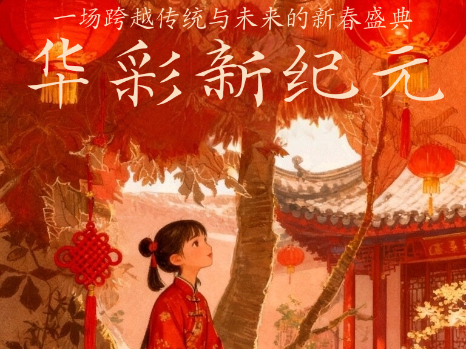

新春会
首页
核心价值
动态数据看板
关于我们
加入我们
支持我们
☰
新春会
欢迎来到「新春会」。在这里发布活动信息与预售商品，设计简洁、现代，适配各类设备并便于后续维护。
查看支持 / 预售
了解核心价值

活动亮点
亮点一
用于简短介绍活动的特色或卖点，便于日后替换为真实内容。
亮点二
用于简短介绍活动的特色或卖点，便于日后替换为真实内容。
亮点三
用于简短介绍活动的特色或卖点，便于日后替换为真实内容。